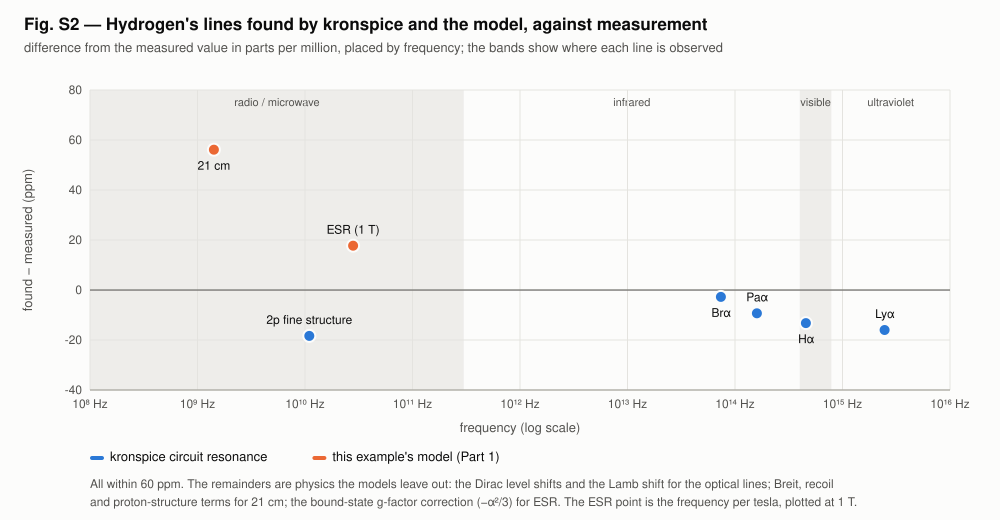
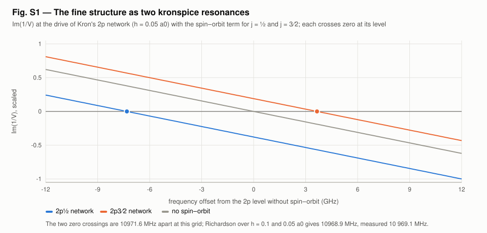
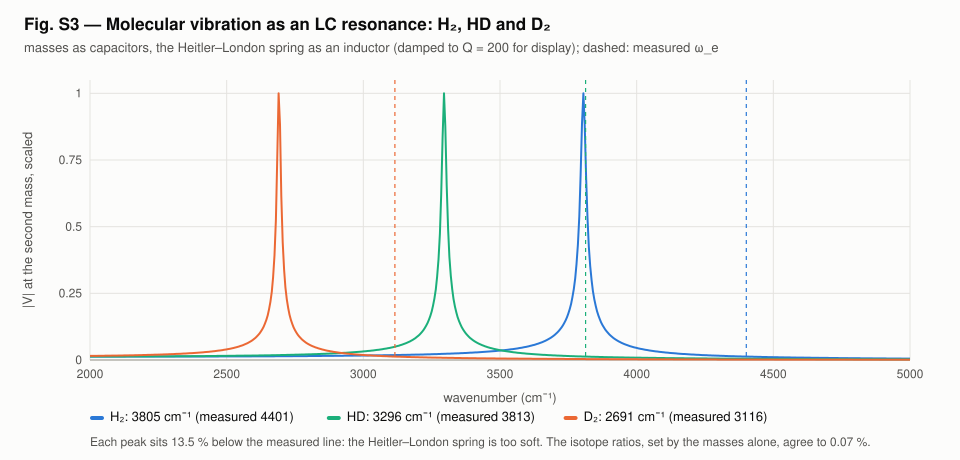

<!-- SPDX-License-Identifier: GPL-3.0-only OR LicenseRef-kronspice-Commercial -->
<!-- Copyright (C) 2026 Franklin Amador -->
<meta charset="utf-8">
<meta name="viewport" content="width=device-width, initial-scale=1, viewport-fit=cover">
<title>Hydrogen Spectral Resonances</title>
<meta name="claude:viewport-fit-sides" content="cover">
<link rel="preconnect" href="https://fonts.googleapis.com">
<link rel="stylesheet" href="https://fonts.googleapis.com/css2?family=IBM+Plex+Sans:ital,wght@0,400;0,500;0,600;1,400&family=IBM+Plex+Mono:wght@400;500&family=IBM+Plex+Serif:wght@500;600&display=swap">
<style>
/* Layout: one reading column (~68ch) with figures allowed to run wider; a lab-report masthead; sections follow the run's Parts. */
:root {
  --bg: #f6f7f8;
  --paper: #ffffff;
  --fg: #16191d;
  --muted: #59606a;
  --rule: #dde1e6;
  --accent: #2a78d6;   /* S, and the figures' blue */
  --north: #d9582a;    /* N, the figures' orange */
  --code-bg: #eef1f4;
  --display: "IBM Plex Serif", Georgia, "Times New Roman", serif;
  --body: "IBM Plex Sans", "Segoe UI", system-ui, -apple-system, sans-serif;
  --mono: "IBM Plex Mono", ui-monospace, "Cascadia Mono", Consolas, monospace;
}
@media (prefers-color-scheme: dark) {
  :root:not([data-theme="light"]) {
    --bg: #111418; --paper: #181c21; --fg: #e6e9ed; --muted: #9aa3ad; --rule: #2b3139;
    --accent: #5b9be6; --north: #ee7f52; --code-bg: #1f252c; color-scheme: dark;
  }
}
:root[data-theme="dark"] {
  --bg: #111418; --paper: #181c21; --fg: #e6e9ed; --muted: #9aa3ad; --rule: #2b3139;
  --accent: #5b9be6; --north: #ee7f52; --code-bg: #1f252c; color-scheme: dark;
}
* { box-sizing: border-box; }
body {
  background: var(--bg); color: var(--fg); font-family: var(--body);
  font-size: 1rem; line-height: 1.6; margin: 0;
  padding-left: max(16px, env(safe-area-inset-left, 0px));
  padding-right: max(16px, env(safe-area-inset-right, 0px));
}
main { max-width: 68rem; margin: 0 auto; padding-block: 2.5rem 4rem; display: grid; gap: 2.75rem; }
.col { max-width: 44rem; display: grid; gap: 0.9rem; min-width: 0; }
header.mast { display: grid; gap: 0.6rem; border-bottom: 1px solid var(--rule); padding-bottom: 1.6rem; }
.eyebrow { font-family: var(--mono); font-size: 0.78rem; letter-spacing: 0.08em; text-transform: uppercase; color: var(--muted); }
h1, h2, h3 { font-family: var(--display); font-weight: 600; line-height: 1.2; text-wrap: balance; margin: 0; }
h1 { font-size: clamp(1.9rem, 4.5vw, 2.7rem); }
h2 { font-size: 1.55rem; }
h3 { font-size: 1.12rem; font-family: var(--body); font-weight: 600; }
p { margin: 0; }
.lede { font-size: 1.1rem; color: var(--muted); max-width: 44rem; }
blockquote { margin: 0; padding: 0.2rem 0 0.2rem 1rem; border-left: 3px solid var(--north); font-family: var(--display); font-size: 1.15rem; font-style: italic; }
.meta { display: flex; flex-wrap: wrap; gap: 0.4rem 1.4rem; font-family: var(--mono); font-size: 0.82rem; color: var(--muted); }
.n { color: var(--north); font-weight: 600; }
.s { color: var(--accent); font-weight: 600; }
section { display: grid; gap: 1.2rem; }
.part { display: flex; align-items: baseline; gap: 0.8rem; }
.part .num { font-family: var(--mono); font-size: 0.85rem; color: var(--muted); }
ul { margin: 0; padding-left: 1.2rem; display: grid; gap: 0.35rem; }
code { font-family: var(--mono); font-size: 0.88em; background: var(--code-bg); padding: 0.05em 0.35em; border-radius: 3px; }
pre { margin: 0; background: var(--code-bg); padding: 0.9rem 1rem; border-radius: 6px; overflow-x: auto; font-family: var(--mono); font-size: 0.85rem; line-height: 1.5; }
.tablewrap { overflow-x: auto; }
table { border-collapse: collapse; width: 100%; font-size: 0.92rem; font-variant-numeric: tabular-nums; }
th, td { text-align: left; padding: 0.5rem 0.75rem 0.5rem 0; border-bottom: 1px solid var(--rule); vertical-align: top; }
th { font-weight: 600; font-size: 0.8rem; letter-spacing: 0.03em; color: var(--muted); }
td.num { font-family: var(--mono); font-size: 0.88rem; white-space: nowrap; }
figure { margin: 0; display: grid; gap: 0.55rem; }
figure .plate { background: #fcfcfb; border: 1px solid var(--rule); border-radius: 6px; padding: 0.4rem; overflow-x: auto; }
figure img { display: block; width: 100%; height: auto; max-width: 100%; }
figcaption { font-size: 0.88rem; color: var(--muted); max-width: 52rem; }
figcaption b { color: var(--fg); font-weight: 600; }
.pair { display: grid; grid-template-columns: repeat(auto-fit, minmax(min(100%, 20rem), 1fr)); gap: 1.2rem; }
.pair figure .plate { padding: 0; }
.status { display: grid; gap: 0.5rem; padding: 1.1rem 1.25rem; background: var(--paper); border: 1px solid var(--rule); border-left: 4px solid var(--accent); border-radius: 6px; }
.status .label { font-family: var(--mono); font-size: 0.78rem; letter-spacing: 0.08em; text-transform: uppercase; color: var(--muted); }
footer { border-top: 1px solid var(--rule); padding-top: 1.4rem; display: grid; gap: 0.8rem; font-size: 0.9rem; color: var(--muted); }
a { color: var(--accent); }
a:focus-visible { outline: 2px solid var(--accent); outline-offset: 2px; }
@media (prefers-reduced-motion: reduce) { .gif-note::after { content: " (animations play as GIFs; pause them in your browser if needed)"; } }
</style>

<main>
  <header class="mast">
    <span class="eyebrow">kronspice · examples/hydrogen_poles · hypothesis H34, Part 4 · 5 November 2026</span>
    <h1>Hydrogen's spectral lines as circuit resonances</h1>
    <p class="lede">The levels of the hydrogen atom and the vibration of the hydrogen molecule, found as resonances of circuits solved by kronspice, set beside the lines measured in laboratories and in the sky.</p>
    <div class="meta"><span>Lines within 60 ppm of measurement</span><span>H₂ vibration 13.5 % low (Heitler–London spring)</span><span>Companions: <a href="hydrogen_atom_report.html">one atom</a> · <a href="h2_report.html">H₂</a></span></div>
  </header>

  <section>
    <div class="col">
      <h2>How the circuits find the lines</h2>
      <ul>
        <li><b>The atom's levels are resonances.</b> Gabriel Kron showed in 1945 that the radial Schrödinger equation is a ladder network. The series branches carry the kinetic energy, the shunt branches the potential, and the energy is the square of the network's frequency. kronspice solves the ladder by AC analysis, and each level is where the driving-point reactance changes sign. There is one network per orbital: 1s, 2p, 3d, 4f, 5g.</li>
        <li><b>The fine structure is two resonances.</b> The 2p network is built twice, with the spin–orbit term (g<sub>s</sub> − 1)(α²/2)⟨L·S⟩/r³ for j = ½ and for j = 3⁄2. The two resonances differ by the fine-structure interval.</li>
        <li><b>The molecule's vibration is an LC resonance.</b> The two protons are capacitors, their masses the capacitances, and the bond is an inductor of 1/k. The spring constant k comes from the Heitler–London energy curve of the H₂ report.</li>
        <li><b>Two lines come from the model, not a circuit.</b> The 21 cm line uses the computed electron spin density at the proton, and the ESR frequency uses the computed magnetic moment.</li>
      </ul>
      <p>Grids of 0.1 and 0.05 a0 are combined by Richardson extrapolation. Every kronspice resonance agrees with the network's own matrix eigenvalue to 5×10⁻¹⁴ hartree.</p>
    </div>
  </section>

  <section>
    <div class="col">
      <h2>The lines against the real world</h2>
      <div class="tablewrap"><table>
        <thead><tr><th>Line</th><th>Found</th><th>Measured</th><th>ppm</th><th>How</th><th>Where it is seen and used</th></tr></thead>
        <tbody>
          <tr><td>Lyman α (2p → 1s)</td><td class="num">121.5689 nm</td><td class="num">121.5670 nm</td><td class="num">−16</td><td>kronspice</td><td>Solar and interstellar ultraviolet; the Lyman-α forest in quasar spectra maps hydrogen between galaxies</td></tr>
          <tr><td>Balmer α, Hα (3d → 2p)</td><td class="num">656.4697 nm</td><td class="num">656.4610 nm</td><td class="num">−13</td><td>kronspice</td><td>The red glow of emission nebulae; solar chromosphere filters; the commonest line in amateur astronomy</td></tr>
          <tr><td>Paschen α (4f → 3d)</td><td class="num">1875.627 nm</td><td class="num">1875.61 nm</td><td class="num">−9</td><td>kronspice</td><td>Infrared hydrogen line that passes through dust: star formation in galaxy centres</td></tr>
          <tr><td>Brackett α (5g → 4f)</td><td class="num">4052.28 nm</td><td class="num">4052.27 nm</td><td class="num">−3</td><td>kronspice</td><td>Infrared line of the ionized gas round young, embedded stars</td></tr>
          <tr><td>Fine structure 2p3⁄2 − 2p½</td><td class="num">10 968.9 MHz</td><td class="num">≈ 10 969.1 MHz</td><td class="num">−18</td><td>kronspice</td><td>The microwave interval of the Lamb–Retherford experiments (1947), which opened quantum electrodynamics</td></tr>
          <tr><td>Hyperfine 1s, 21 cm</td><td class="num">1420.486 MHz</td><td class="num">1420.406 MHz</td><td class="num">+56</td><td>model</td><td>Radio astronomy of neutral hydrogen (galaxy rotation curves, the Milky Way's spiral arms); the hydrogen-maser clock</td></tr>
          <tr><td>Electron spin resonance of H</td><td class="num">28 024.95 MHz per T</td><td class="num">28 024.45 MHz per T</td><td class="num">+18</td><td>model</td><td>ESR of hydrogen atoms trapped in solids and gases; atomic-hydrogen masers and magnetometry</td></tr>
        </tbody>
      </table></div>
      <p>The remaining parts per million are physics these models leave out. For the optical lines it is the Dirac level shifts and the Lamb shift (quantum electrodynamics). For 21 cm it is the Breit, recoil and proton-structure terms. For ESR it is the bound electron's g-factor correction, −α²/3. Measured values are vacuum wavelengths from the NIST Atomic Spectra Database, the 21 cm line of Hellwig et al. (1970), and the bound g<sub>J</sub> of Tiedemann &amp; Robinson (1977). The fine-structure interval is the established ≈ 10 969 MHz (for example Hagley &amp; Pipkin 1994).</p>
    </div>
    <figure>
      <div class="plate"></div>
      <figcaption><b>Fig. S2.</b> Each line's difference from its measured value, placed by frequency from the radio to the ultraviolet. Blue: kronspice circuit resonances. Orange: this example's model.</figcaption>
    </figure>

    <figure>
      <div class="plate"></div>
      <figcaption><b>Fig. S1.</b> The fine structure found by kronspice. The response of the 2p network crosses zero at its level. With the spin–orbit term, the j = ½ and j = 3⁄2 networks cross 10.97 GHz apart; without it, between them.</figcaption>
    </figure>

  </section>

  <section>
    <div class="col">
      <h2>The hydrogen molecule's vibration</h2>
      <div class="tablewrap"><table>
        <thead><tr><th>Molecule</th><th>kronspice ω<sub>e</sub> (cm⁻¹)</th><th>Measured ω<sub>e</sub></th><th>Difference</th></tr></thead>
        <tbody>
          <tr><td>H₂</td><td class="num">3805.0</td><td class="num">4401.21</td><td class="num">−13.5 %</td></tr>
          <tr><td>HD</td><td class="num">3295.5</td><td class="num">3813.15</td><td class="num">−13.6 %</td></tr>
          <tr><td>D₂</td><td class="num">2691.2</td><td class="num">3115.50</td><td class="num">−13.6 %</td></tr>
        </tbody>
      </table></div>
      <ul>
        <li><b>The spring is too soft.</b> The Heitler–London wavefunction gives k = 0.276 E<sub>h</sub>/a0² at its bond length 1.64 a0. Every vibration comes out 13.5 % low, the same error that leaves its bond energy at two thirds of the measured value.</li>
        <li><b>The isotope ratios do not depend on the spring.</b> They are set by the masses alone, and the circuit gets them right: HD/H₂ 0.8661 against 0.8664 measured, D₂/H₂ 0.7073 against 0.7079. The small remainders are anharmonicity, which a linear spring does not have.</li>
        <li><b>Rotation.</b> The rotational constant B = 1/(2μR²) is 44.3 cm⁻¹ at the Heitler–London bond length. At the measured bond length it is 60.89, against the measured 60.853. So the bond length, not the formula, is what's off.</li>
        <li><b>In the real world.</b> H₂'s vibration lines are how molecular hydrogen is seen in space. The 2.12 µm line, vibration plus rotation, maps shocked gas in star-forming regions. On Earth, Raman spectroscopy of H₂ measures temperature and the ortho-to-para ratio in fuel tanks and fusion fuel.</li>
      </ul>
    </div>
    <figure>
      <div class="plate"></div>
      <figcaption><b>Fig. S3.</b> The vibration circuits of H₂, HD and D₂ (damped for display). Each peak sits 13.5 % below its measured line (dashed), the same factor for all three.</figcaption>
    </figure>

  </section>

  <section>
    <div class="col">
      <div class="status">
        <span class="label">What it shows</span>
        <p>Circuits solved by kronspice reproduce hydrogen's spectrum from the radio to the ultraviolet. Kron's 1945 network gives the gross structure and, with the spin–orbit term, the 11 GHz fine structure, each within 20 ppm of measurement. The same model that gave the atom's poles gives the 21 cm line within 56 ppm. The molecular circuit gets the isotope pattern of H₂'s vibration, but its Heitler–London spring is too soft by 13.5 %.</p>
        <p>None of these lines involves the 2p3⁄2 octupole of the <a href="hydrogen_atom_report.html">atom report</a>. Its magnetic interactions with the proton are far below these intervals, and the proton has no octupole to couple to.</p>
      </div>
    </div>
  </section>

  <footer>
    <div class="col">
      <span class="eyebrow">Reproduce</span>
      <pre>go run ./examples/hydrogen_poles -svg examples/hydrogen_poles/viz
go test -run TestSpectrum ./examples/hydrogen_poles</pre>
      <span class="eyebrow">Sources</span>
      <ul>
        <li>G. Kron, “Electric circuit models of the Schrödinger equation,” <i>Phys. Rev.</i> 67, 39 (1945).</li>
        <li>H. A. Bethe, E. E. Salpeter, <i>Quantum Mechanics of One- and Two-Electron Atoms</i> (1957), §12 (spin–orbit), §22 (hyperfine).</li>
        <li>NIST Atomic Spectra Database (hydrogen lines, vacuum wavelengths); H. Hellwig et al., <i>IEEE Trans. Instrum. Meas.</i> 19, 200 (1970); J. S. Tiedemann, H. G. Robinson, <i>Phys. Rev. Lett.</i> 39, 602 (1977); E. W. Hagley, F. M. Pipkin, <i>Phys. Rev. Lett.</i> 72, 1172 (1994).</li>
        <li>K. P. Huber, G. Herzberg, <i>Constants of Diatomic Molecules</i> (1979): ω<sub>e</sub> and B<sub>e</sub> of H₂, HD, D₂.</li>
      </ul>
    </div>
  </footer>
</main>
